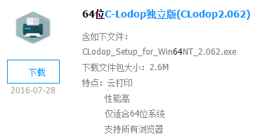
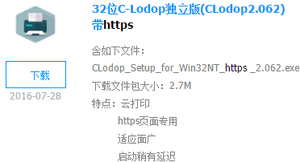
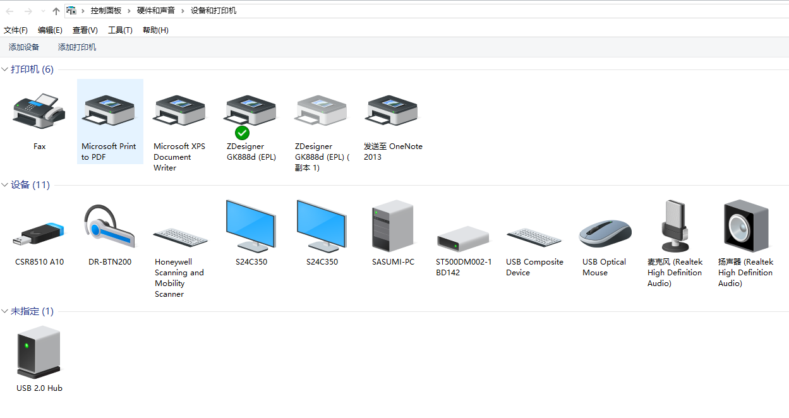
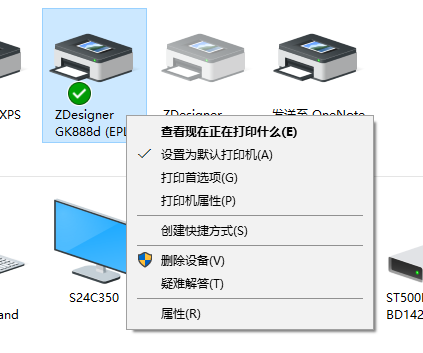
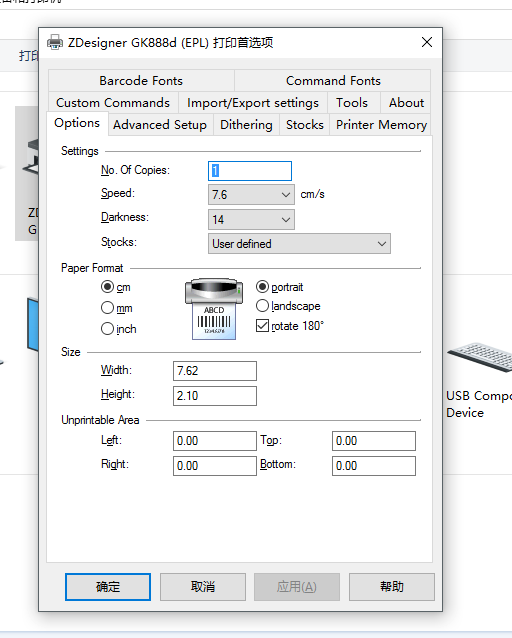
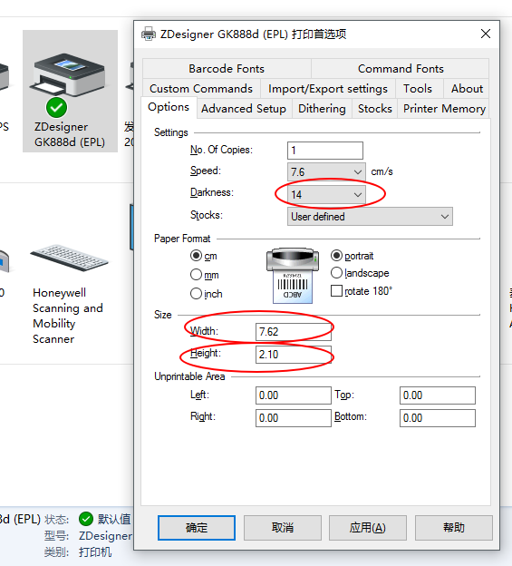
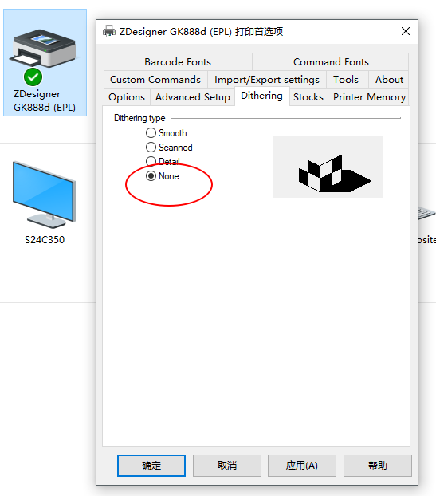
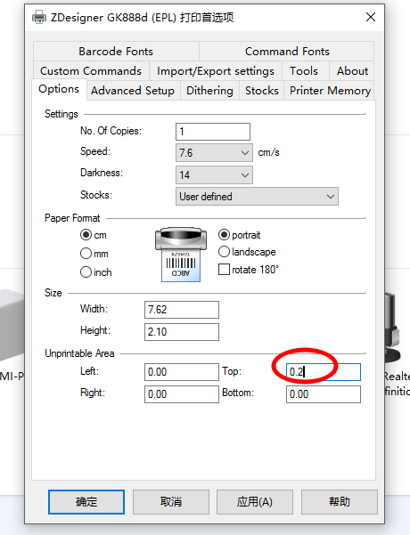
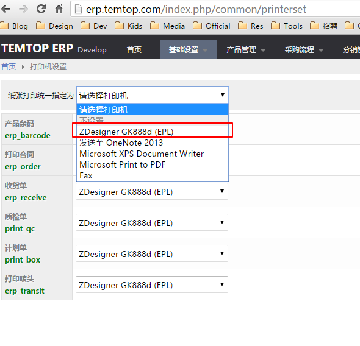

斑马条码打印机设置手册
本文适用于：
打印机安装
- 连接打印机USB数据线到电脑
- 接通打印机电源适配线，检查打印机指示灯是否亮起
- 按照打印机说明，放置打印纸
- 打印测试页面，验证打印机是否正确安装
Lodop打印控件安装
- 登录Lodop官网，下载系统适用Lodop打印控件：http://www.lodop.net/download.html 一般如windows 7,8,10系统，可选择下载C-Lodop独立版程序进行安装，下载时需要区分当前系统是否为64位、32位系统：   帮助：如何识别当前系统是32位还是64位操作系统？
- 安装所下载的Lodop安装程序
- 重启浏览器（Chrome谷歌浏览器）
打印机设置
步骤一
打开windows控制面板，进入【设备和打印机】设置页面

步骤二
打开斑马打印机【打印首选项】


步骤三
选项页面设置以下项目
Options（选项）
- Darkness（浓度）：14
- Width（纸张宽度）：7.62
- Height（纸张高度）：2.1，如打印其他项目，请按照实际纸张高度进行设置

Dithering（抖动）
- Dithering type（抖动类型）：None（无）

页面顶部调整（部分打印机需要设置）
如打印机出现打印条码（barcode）出现code跨页情况，可以微调页面顶部边距

步骤四
保存设置，退出设置页面
内部系统打印设置（ERP为例）
登录、打开网站打印机设置页面 ERP系统打印机设置页面地址为：http://erp.temtop.com/index.php/common/printerset
统一设置系统使用打印机为：斑马打印机（ZDesigner）

各功能打印机设置参数
产品条码，面单打印机参数设置
| 名称 | 选项-设置 | 选项-纸张大小 | 选项-非打印区域 | 高级设置-位置调整 | 抖动 | ||||||
| 打印速度 | 打印浓度 | 宽度 | 高度 | 左 | 右 | 顶部 | 底部 | 间距长度 | 顶部偏移 | 抖动类型 | |
| 产品条码 | 7.6 | 11 | 6cm | 3cm | 0 | 0 | 0 | 0 | 0.3cm | 0 | 无 |
| GLS面单 | 7.6 | 11 | 10cm | 15cm | 0 | 0 | 0 | 0 | 0.3cm | 0 | 无 |
| DHL/Letter/WARENSENDUNG | 7.6 | 11 | 10cm | 20cm | 0 | 0 | 0 | 0 | 0.3cm | 0 | 无 |
其余设置参数均使用默认参数即可。
使用图片打印FBA产品条码参数设置
- Direction:Vertical(纵向)
- Photo size: Full page(整页)
- Fit: Shrink to fit(自适应)
lodop打印使用手册
热敏头测试页 条码图像测试